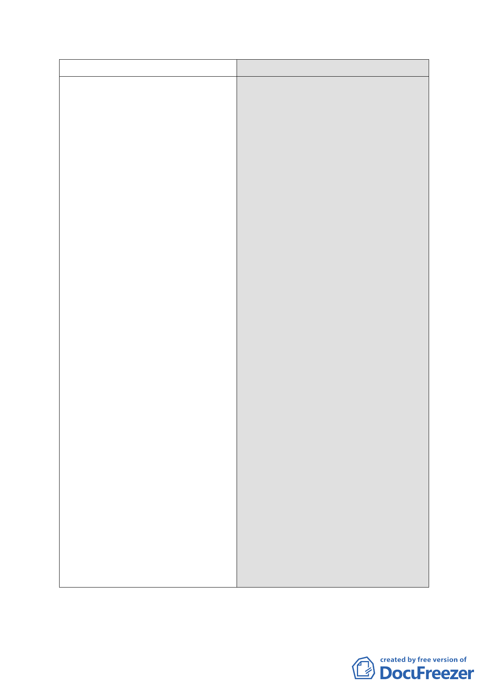

7.其他
項目
決議
1.本案計畫書、圖應增列，或文字、
圖面漏列、錯誤，應再修正部分。
（1）計畫書第 26 頁「陸、其他」增
列第六點規定「後續市府如經協
調取得轉運站用地東側商業區
部分土地一併作轉運站使用，為
利轉運站整體規劃及公有土地
有效利用，該商業區土地容積得
與轉運站用地容積互為調派」。
（2）計畫書第 5 頁主要計畫變更示意
圖，D 區東側業經內政部都委會
審決變更為公園用地，F 區之
FR-1 圖例應標註於 F 區街廓之西
側，請修正。
（3）計畫書第 7 頁圖四，變電所用地
以南之工業區土地後續都市計
畫辦理程序，請依內政部都委會
審議決議，與 D 區 DR-1 標註相
同圖例。
（4）計畫書第 8 頁(二)公園用地，除
C 區供北部流行音樂中心使用之
公園用地外，請補列 D 區經內政
部都委會審議決議增列之公園
用地。
（5）計畫書第 25 頁事業及財務計畫
表，有關公園用地與道路用地之
面積與開闢經費，請依本次提委
員會簡報說明之文字內容予以
修正。
2.其餘原則同意依市府 100 年 9 月 16
日所送修正後計畫書內容辦理。
二、公民或團體陳情意見原則同意依市府 100 年 9 月 16 日所送回
- 16 -